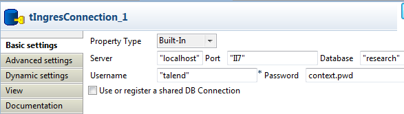
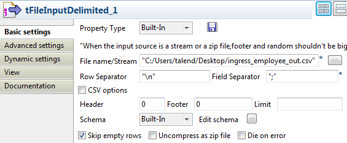
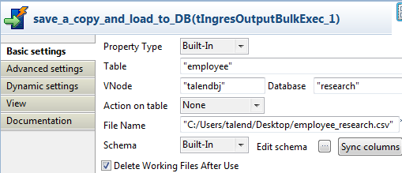

Les composants tIngresOutputBulk et tIngresBulkExec sont généralement utilisés ensemble comme deux parties d’un processus en deux étapes. Dans la première étape, un fichier de sortie est généré. Dans la deuxième étape, ce fichier est utilisé lors de l’opération d’INSERT afin de peupler une base de données. Cette exécution en deux étapes est unifiée dans le composant tIngresOutputBulkExec.
|
Famille de composant |
Databases/Ingres | |
|
Fonction |
Le composant tIngresOutputBulkExec prépare un fichier de sortie et l'utilise pour alimenter une table dans le SGBD Ingres. | |
|
Objectif |
Le tIngresOutputBulkExec insère des données en masse dans le SGBD Ingres afin d'optimiser les performances. | |
|
Basic settings |
Property type | Peut être Built-in ou Repository. |
|
|
|
Built-in : Propriétés utilisées ponctuellement. |
|
|
|
Repository : Sélectionnez le fichier dans lequel sont stockées les propriétés du composant. Les champs suivants sont alors pré-remplis à l’aide des données collectées. |
|
|
Table |
Nom de la table à remplir. |
|
|
VNode |
Nom du nœud virtuel. Le serveur de la base de données doit être installé sur la même machine que le studio ou que le Job contenant un tIngresOutputBulkExec. |
|
|
Database |
Nom de la base de données. |
|
|
Action on table |
Actions pouvant être effectuées sur la table : None : Aucune opération. Truncate : Supprime toutes les lignes de la table et rend l'espace du fichier au système d'exploitation. |
| File name | Nom du fichier à générer et à charger. AvertissementCe fichier est généré sur la machine spécifiée dans le champ VNode et doit être sur la même machine que le serveur de la base de données. | |
|
|
Schema et Edit Schema |
Un schéma est une description de lignes, il définit le nombre de champs qui sont traités et passés au composant suivant. Le schéma peut être Built-in ou distant dans le Repository. |
|
|
Delete Working Files After Use |
Cochez cette case pour supprimer les fichiers créés durant l'exécution. |
|
Advanced settings |
Field Separator |
Saisissez le caractère, la chaîne de caractères ou l'expression régulière permettant de séparer les champs. |
|
Row Separator |
Chaîne de caractères (ex : “\n” sous Unix) permettant de séparer les lignes. | |
|
On Error |
Politique de gestion d'erreur : Continue : Continuer l'exécution. Terminate : Terminer l'exécution. | |
|
Reject Row File |
Chemin d'accès et nom du fichier contenant les lignes rejetées. Disponible lorsque l'option Continue est sélectionnée dans la liste On Error. | |
|
Error Count |
Nombre d'erreurs avant arrêt de l'exécution. Disponible lorsque l'option Terminate est sélectionnée dans la liste On Error. | |
|
Rollback |
Activer ou désactiver le rollback. | |
|
Null Indicator |
Valeur de l'indicateur null. | |
|
Session User |
Utilisateur de la session définie (connexion à la base de données). | |
|
Allocation |
Nombre de pages initialement allouées à la table ou à l'index. | |
|
Extend |
Nombre de pages étendant la table ou l'index. | |
|
Fill Factor |
Spécifiez le pourcentage (de 1 à 100) de chaque page principale de données devant être remplie de lignes, dans des conditions idéales. Par exemple, si vous spécifiez un facteur de remplissage de 40, le serveur de SGBD remplit de lignes 40% de chaque page principale dans la table restructurée. | |
|
Min Pages/Max Pages |
Spécifiez le nombre minimum/maximum de pages principales qu'une table de hachage doit posséder. Ces nombres doivent être de 1 minimum. | |
|
|
Leaf Fill |
Une copie de masse peut spécifier une valeur leaffill. Cette clause spécifie le pourcentage (de 1 à 100) de chaque index de page de table B-tree devant être remplie par des lignes durant la copie. Cette clause peut être utilisée uniquement sur des tables ayant une structure de stockage B-tree. |
|
|
Non Leaf Fill |
Une copie de masse peut spécifier une valeur nonleaffill. Cette clause spécifie le pourcentage (de 1 à 100) de chaque index de page de table B-tree ne devant pas être rempli par des lignes durant la copie. Cette clause peut être utilisée uniquement sur des tables ayant une structure de stockage B-tree. |
|
Row Estimate |
Spécifiez le nombre estimé de lignes à copier d'un fichier à une table durant l'opération de copie de masse. | |
|
Trailing WhiteSpace |
Cochée par défaut, cette case est conçue pour supprimer les espaces en fin de champ et s'applique uniquement aux types de données VARCHAR, NVARCHAR et TEXT. | |
|
Encoding |
Sélectionnez l’encodage à partir de la liste ou sélectionnez Custom et définissez-le manuellement. Ce champ est obligatoire pour la manipulation des données des bases de données. | |
|
Output |
Emplacement où écrire le message d'erreur : to console : Ecrire le message dans la console. to global variable : Ecrire le message dans une variable globale. | |
|
|
tStatCatcher Statistics |
Cochez cette case pour collecter les données de log au niveau du composant. |
|
Utilisation |
Le composant tIngresOutputBulkExec est généralement utilisé avec le tIngresConnection et le tIngresRow. Il prépare un fichier de sortis et l'alimente en masse avec des données dans le SGBD Ingres, afin d'optimiser les performances. | |
| Limitation | Le serveur/client de la base de données doit être installé sur la même machine que le studio ou que le Job contenant un tIngresOutputBulkExec, afin que le composant fonctionne correctement. | |
Dans ce scénario, un composant tIngresOutputBulkExec est utilisé afin de préparer un fichier de sortie contenant des données provenant d'un fichier .csv concernant des employés et utilise ensuite ce fichier de sortie afin d'alimenter une table dans une base de données Ingres.
Déposez un tIngresConnection, un tFileInputDelimited et un tIngresOutputBulkExec de la Palette dans l'espace de modélisation graphique.
Renommez le tIngresOutputBulkExec en save_a_copy_and_load_to_DB.
Reliez le tIngresConnection au tFileInputDelimited à l'aide d'un lien OnSubjobOk.
Reliez le tFileInputDelimited au tIngresOutputBulkExec à l'aide d'un lien Row > Main.

Double-cliquez sur le tIngresConnection pour ouvrir sa vue Component.
Dans le champ Server, saisissez l'adresse du serveur où se trouve le SGBD Ingres, par exemple "localhost".
Laissez la valeur du champ Port par défaut.
Dans le champ Database, saisissez le nom de la base de données Ingres, par exemple "research".
Dans les champs Username et Password, saisissez les informations d'authentification.
Une variable de contexte est utilisée pour le mot de passe. Pour plus d'informations concernant les variables de contexte, consultez le Guide utilisateur de Talend Open Studio.
Double-cliquez sur le composant tFileInputDelimited pour ouvrir sa vue Component.
Sélectionnez le fichier source en cliquant sur le bouton [...] à côté du champ File name/Stream et en parcourant votre système.
Cliquez sur le bouton [...] à côté du champ Edit schema afin d'ouvrir l'éditeur de schéma.

Cliquez quatre fois sur le bouton [+] pour ajouter quatre colonnes, par exemple name, age, job et dept, dont le type de données est respectivement string, Integer, string et string.
Cliquez sur OK pour fermer l'éditeur de schéma.
Cliquez sur Yes dans la fenêtre qui s'ouvre afin d'accepter la propagation des modifications au composant suivant.
Laissez les autres composants tels qu'ils sont.
Double-cliquez sur le tIngresOutputBulkExec pour ouvrir sa vue Component.
Dans le champ Table, saisissez le nom de la table pour l'insertion de données.
Dans les champs VNode et Database, saisissez le nom du nœud virtuel et de la base de données.
Dans le champ File Name, saisissez le chemin d'accès complet au fichier qui contiendra les données du fichier source.
Appuyez sur les touches Ctrl+S afin de sauvegarder votre Job.
Appuyez sur F6 pour exécuter le Job.

Comme affiché ci-dessus, les données concernant les employés sont écrites dans la table employee dans la base de données research, sur le nœud talendbj. Le fichier de sortie employee_research.csv a été généré à l'emplacement spécifié, C:/Users/talend/Desktop.
Pour des scénarios associés, consultez :